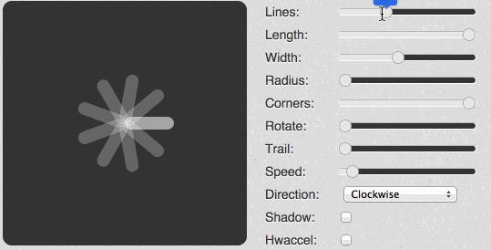

For the MuseScore apps, I needed an easily customizable BusyIndicator. The designer came up with something similar to spin.js but of course, we needed it in QML.
Here is spin.js in action:

And here is the QML version.
Since we can't run QML in the browser (yet?), I made a short video. Of course, you can just download the source code and run it yourself.
BusyIndicatorStyle
Qt Quick Controls can be customized with a (ControlName)Style. For a BusyIndicator, it's a BusyIndicatorStyle.
BusyIndicatorStyle {
id: style
property int lines: 11
property real length: 10 // % of the width of the control
property real width: 5 // % of the height of the control
property real radius: 13 // % of the width of the control
property real corner: 1 // between 0 and 1
property real speed: 100 // smaller is faster
property real trail: 0.6 // between 0 and 1
property bool clockWise: true
property real opacity: 0.7
property string color: "#7B756B"
property string highlightColor: "white"
property string bgColor: "black"
indicator: Rectangle {
color: style.bgColor
visible: control.running
Repeater {
id: repeat
model: style.lines
Rectangle {
property real factor: control.width / 200
color: style.color
opacity: style.opacity
Behavior on color {
ColorAnimation {
from: style.highlightColor
duration: style.speed * style.lines * style.trail
}
}
radius: style.corner * height / 2
width: style.length * factor
height: style.width * factor
x: control.width / 2 + style.radius * factor
y: control.height / 2 - height / 2
transform: Rotation {
origin.x: -style.radius * factor
origin.y: height / 2
angle: index * (360 / repeat.count)
}
Timer {
id: reset
interval: style.speed * (style.clockWise ? index : style.lines - index)
onTriggered: {
parent.opacity = 1
parent.color = style.highlightColor
reset2.start()
}
}
Timer {
id: reset2
interval: style.speed
onTriggered: {
parent.opacity = style.opacity
parent.color = style.color
}
}
Timer {
id: globalTimer // for a complete cycle
interval: style.speed * style.lines
onTriggered: {
reset.start()
}
triggeredOnStart: true
repeat: true
}
Component.onCompleted: {
globalTimer.start()
}
}
}
}
}
I exposed the different customization parameters as QML properties.
Then the core of the style is a Repeater. It will draw a given number of Rectangles using the color, corner radius etc... and of course a Rotation.
To animate the spinner, I relied on 3 Timers per rectangle.
- A global timer fires for every cycle and start a second timer.
- This second timer will animate the color and opacity of the given rectangle with an interval depending on the index of the rectangle and start a new timer.
- This last timer will restore the state of the rectangle to default according to the speed parameters.
Source code
The code is on GitHub: CustomBusyIndicator
It could be that there is a better and more QML way of doing the animation. If so, let me know @lasconic